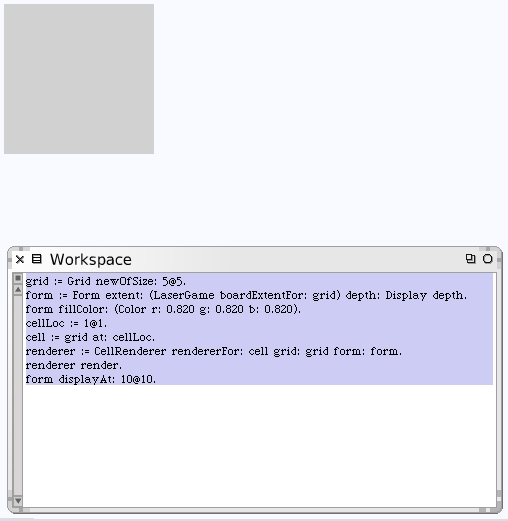
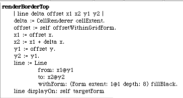
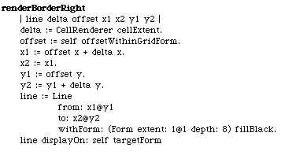
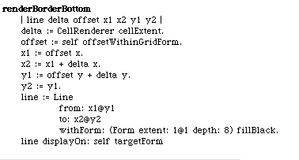
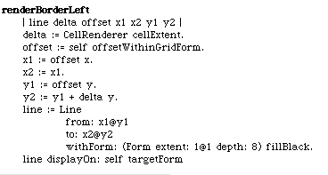
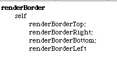
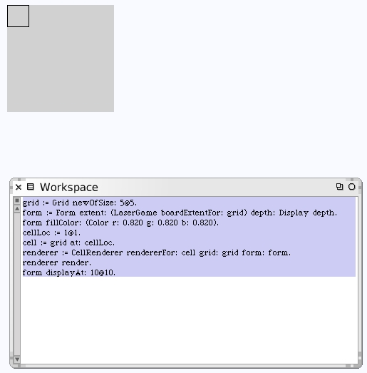

Back to drawing our borders. We can modify our workspace code to use the new method for instantiating the correct renderer. And when we run the new workspace code it still draws the colored box as we expected.
Our cell renderer now knows where it is on the target form. Write the code to draw the borders. We will construct the borders by having methods to draw each side individually.
These new instance methods are on the CellRenderer class with the "drawing" protocol.
  

Run the workspace code and we get some nice borders around the cell in our box.
